Software Engineer & Security Researcher
Hi, I'm Jackson Clarke
I build web applications and security tools with clean code and deliberate design. Currently studying at BYU-Idaho.

About
Engineering meets security
I'm a software developer with a focus on web engineering and cybersecurity. I enjoy building tools that are both functional and thoughtfully designed — from dynamic front-end interfaces to command-line security utilities.
My work spans HTML/CSS/JavaScript, Python scripting, and network-level tooling. I approach each project with attention to usability, performance, and security.
Featured Projects